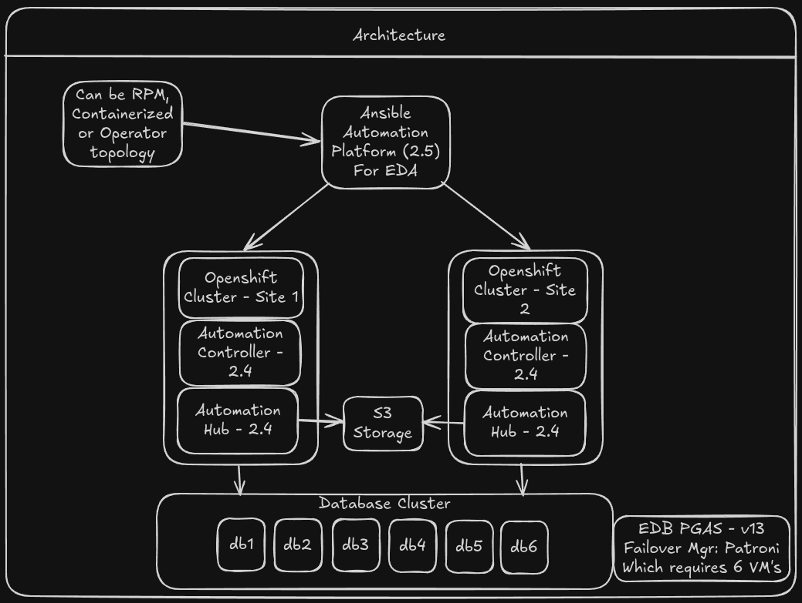
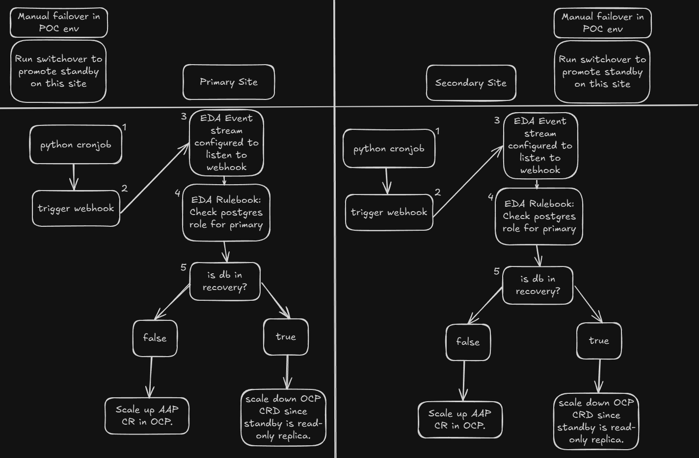

Operator Lifecycle Management
The AAP Operator handles the full lifecycle of Controller, Hub, EDA, and Gateway. A single CR patch scales the entire stack up or down — no manual pod management needed.
Ansible Automation Platform Multi-Site Failover
Automated disaster recovery with zero manual intervention
Enterprise automation platforms must be resilient. Downtime in your automation layer cascades across your entire infrastructure.
When AAP goes down, patching stops, compliance drifts, provisioning halts, and incident response is delayed.
Traditional DR requires runbooks, human decisions, and manual steps — adding minutes or hours to recovery time.
Multi-component platforms (Controller, Hub, EDA, Gateway) require coordinated failover across all services.
Regulatory and business requirements often mandate geographically separated disaster recovery sites.
Fully automated, event-driven multi-site failover for AAP on OpenShift
OpenShift's operator-based lifecycle management combined with Event-Driven Ansible creates a self-healing automation platform that reacts to database role changes in real time.

Central AAP instance with EDA orchestrates two OpenShift clusters backed by a replicated EDB PostgreSQL database cluster
Interactive diagram with step-by-step failover walkthrough
idle_aap: true scales all pods to zero; idle_aap: false brings them back. The operator reconciles automatically.
One API call controls the entire AAP stack
apiVersion: aap.ansible.com/v1alpha1
kind: AnsibleAutomationPlatform
metadata:
name: aap-instance
spec:
idle_aap: trueAll AAP pods scale to 0 replicas.
Resources freed on the standby cluster.
apiVersion: aap.ansible.com/v1alpha1
kind: AnsibleAutomationPlatform
metadata:
name: aap-instance
spec:
idle_aap: falseOperator reconciles and brings
all components back online.
Symmetric monitoring on both sites: CronJob → Webhook → EDA Event Stream → Rulebook → Scale Up/Down

A containerized Python script runs every 60 seconds on each site, querying pg_is_in_recovery() on the local PostgreSQL instance.
The script POSTs {"in_recovery": true/false} to the EDA Event Stream webhook endpoint with Bearer token authentication.
EDA receives the webhook payload and routes it to the corresponding site's Rulebook Activation.
The rulebook evaluates the payload: in_recovery == false means primary (scale up), true means standby (scale down).
EDA triggers a Controller job template that patches the OpenShift CRs, scaling the AAP stack up or down via the operator.
Simple, deterministic rules drive the failover decision
---
- name: Listen for Postgres Status Events
hosts: all
sources:
- ansible.eda.webhook:
host: 0.0.0.0
port: 5000
rules:
- name: Scale Up AAP - DB is Primary
condition: event.payload.in_recovery == false
action:
run_job_template:
name: "Scale up Gateway Site 1 CR"
organization: "AAP-Multisite-Failover"
- name: Scale Down AAP - DB is Standby
condition: event.payload.in_recovery == true
action:
run_job_template:
name: "Scale down Gateway Site 1 CR"
organization: "AAP-Multisite-Failover"All four AAP services are scaled together as a coordinated unit
| Component | API Group | Idle Field | Purpose |
|---|---|---|---|
| Gateway | aap.ansible.com/v1alpha1 |
idle_aap |
Unified API entry point and authentication |
| Controller | automationcontroller.ansible.com/v1beta1 |
idle_deployment |
Job execution engine and workflow orchestration |
| Automation Hub | automationhub.ansible.com/v1beta1 |
idle_deployment |
Content management and collection distribution |
| EDA | eda.ansible.com/v1alpha1 |
idle_deployment |
Event-driven rulebook processing |
External PostgreSQL with streaming replication across sites
Ansible does not manage database replication. It only reacts to the current database role. Any PostgreSQL HA solution (Patroni, pgpool, cloud-managed) can serve as the backend.
SELECT pg_is_in_recovery();Returns false on primary, true on standby
No human intervention required. EDA detects the database role change and triggers failover within 1-2 minutes.
The AAP Operator ensures all components scale together and reconcile to the desired state. No partial failovers.
Database replication is handled by Patroni/TPA. Application failover is handled by EDA + OpenShift. Each layer is independently testable.
The entire setup — operator subscriptions, CR templates, secrets, scaling playbooks — is version-controlled Ansible.
Both sites run identical monitoring and decision logic. Either site can be primary or standby. Same mechanism for failover and failback.
Standby site scales to zero pods (idle_aap: true), freeing compute while keeping the operator ready for instant activation.
| Capability | Traditional (RPM/VM) | OpenShift + Operator |
|---|---|---|
| Scaling | Manual service start/stop across multiple VMs | Single CR patch scales all components |
| State Mgmt | Config files, systemd units, manual verification | Operator reconciles desired vs actual state |
| Failover Time | 5-30 minutes (manual runbook execution) | 1-2 minutes (fully automated) |
| Consistency | Configuration drift between sites over time | Identical CRs and operator versions |
| Resources | Standby VMs consume full resources while idle | Zero pods on standby; resources freed |
| Rollback | Complex, error-prone restoration steps | Same mechanism: patch CR, operator reconciles |
| Auditability | Scattered logs across VMs and services | Centralized in OpenShift + Controller job history |
idle_aap: false
idle_aap: true
idle_aap: true
idle_aap: false
Database switchover detected → CronJobs report new roles within 60 seconds → EDA triggers scaling → AAP fully operational on new site in ~1-2 minutes
Automation Hub content storage supports multiple backends for cross-site consistency
Shared S3 bucket accessible from both sites. Collections and container images are always in sync.
Azure storage account with shared container. Native integration via Kubernetes secrets.
Dynamic provisioning via StorageClass or static NFS PVs for on-premises deployments.
Shared object storage ensures Hub content is immediately available on the standby site without replication delay.
Copy vars/main.yml.example and fill in your database hosts, credentials, namespaces, and storage settings.
Run configure_external_db.yml to create roles and databases for all four AAP services.
Run deploy_aap_site_one.yml and deploy_aap_site_two.yml to install the operator and create AAP instances.
Set up Event Streams, Rulebook Activations, credentials, and job templates in your central AAP instance.
Deploy the containerized PostgreSQL check CronJob to each site's OpenShift cluster.
The platform for resilient automation
OpenShift's operator model transforms AAP disaster recovery from a complex runbook into a simple, automated, event-driven process.